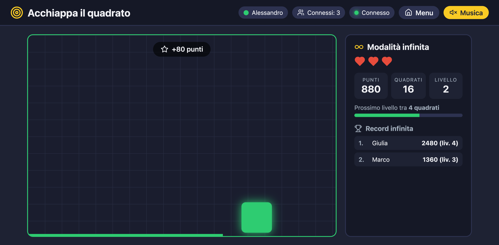

Acchiappa il quadrato · Manuale d'uso
Gentile · Guttadauro · Pavoni · 5A Informatica
5 Le modalità di gioco
Sfida (multiplayer)
Tutti vedono lo stesso quadrato, che si sposta ogni 1,2 s. Conta solo il primo click: il quadrato prende il colore di chi l'ha preso. Chi arriva per primo a 10 punti vince; dopo 5 secondi riparte una nuova sfida.
Difficoltà (da soli)
Ogni quadrato preso vale 1 punto. Se il quadrato sparisce prima del click (la barra in fondo al campo si svuota) si perde una vita. Quando le vite finiscono è game over.
Infinita (da soli, stile Tetris)
3 vite. Ogni 10 quadrati si sale di livello: il quadrato diventa più veloce, più piccolo e cambia colore. Come in Tetris, ogni quadrato vale 40 × livello punti.


| Difficoltà | Vite | Tempo per cliccare | Quadrato |
|---|---|---|---|
| Facile | 3 | 1,4 s | grande |
| Difficile | 2 | 0,9 s | medio |
| Impossibile | 1 | 0,55 s | piccolo |
| Infinita | 3 | da 1,5 s, −12% a livello | più piccolo a ogni livello |
6 Problemi frequenti
| Problema | Soluzione |
|---|---|
npm start dà errore Cannot find module | Eseguire prima npm install nella cartella del progetto. |
| Errore EADDRINUSE (porta occupata) | Il server è già avviato in un altro terminale: chiuderlo con Ctrl + C. |
| Gli altri PC non si collegano | Stessa rete, IP mostrato nel terminale; consentire Node.js nel firewall. |
| Stato Disconnesso | Il server è stato fermato: riavviarlo e ricaricare la pagina. |
| La musica non parte | Usare Chrome, Edge o Firefox e premere il pulsante Musica. |
Acchiappa il quadrato · Manuale d'uso
Pagina 2 di 2